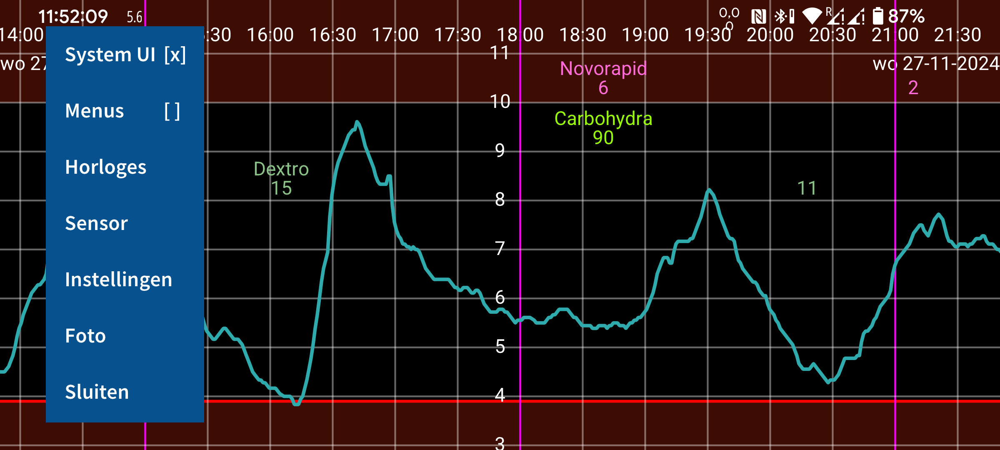
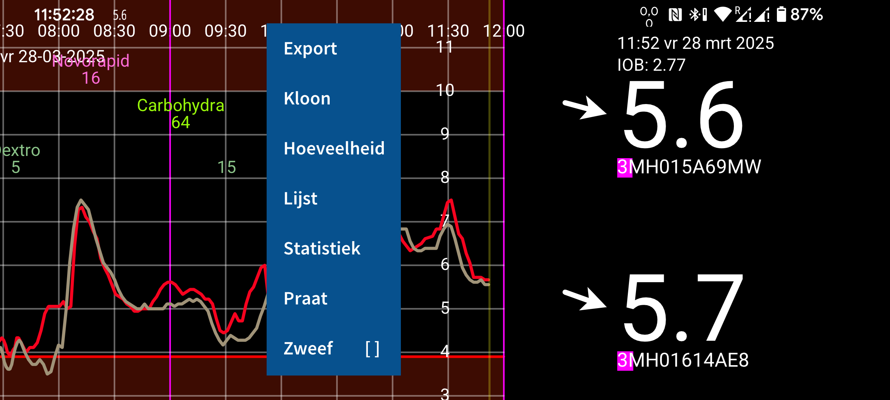
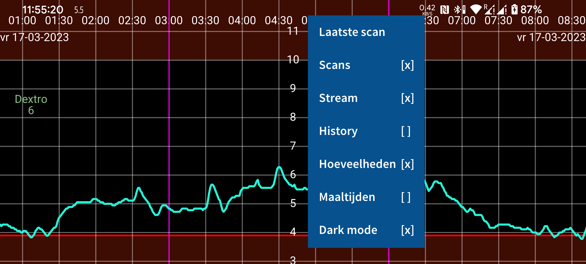
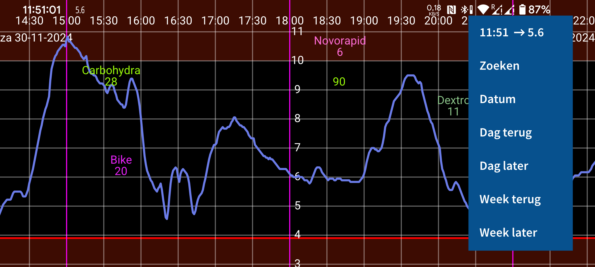

Juggluco is een applet voor bloedglucosecontrole bij diabetespatiënten. De app scant Freestyle Libre (0 en 2) sensoren (via NFC) en ontvangt (via Bluetooth) glucosewaarden vanFreestyle Libre 2, 2+, 3, 3+, Sibionics GS1Sb en GS3, Dexcom G7/ONE+, Accu-Chek SmartGuide en CareSens Air sensoren.
Wanneer je het programma voor de eerste keer gebruikt, kun je een Freestyle Libre 2- sensor scannen door deze tegen de NFC-sensor van je smartphone te houden. Juggluco probeert vervolgens een Bluetooth-verbinding tot stand te brengen met de Freestyle Libre 2-sensoren en ontvangt elke minuut een glucosewaarde zonder te scannen. Om een FreeStyle Libre 3 of 3+ sensor over te nemen die geactiveerd is met de Libre 3-app van Abbott , moet je de Libreview-accountgegevens opgeven die je hebt gebruikt om de sensor te activeren via Instellingen -> Deel gegevens -> Libreview . Druk op 'Account-ID ophalen' en wacht tot de account-ID binnenkomt voordat u scant. Het is niet mogelijk om een Libre 3-sensor over te nemen die gestart is met een FreeStyle Libre 3-lezer . Alle genoemde sensoren kunnen met Juggluco gebruikt worden wanneer ze niet geactiveerd zijn met een andere app of reader.
Om verbinding te maken met Sibionics GS1Sb , Dexcom G7/ONE+, Accu-Chek SmartGuide en CareSens Air sensoren moet je hun datamatrix scannen met linkermenu->Foto. Dexcom G7/ONE+ sensoren worden gekoppeld via Bluetooth, wat je op de meeste telefoons moet accepteren. Je moet dit heel snel doen, anders moet je nog eens 5 minuten wachten. Voorkom dus dat het scherm uitgaat. Op Samsung Galaxy Watch 4 en 7 hoef je niet akkoord te gaan met het koppelen. Gebruikte Dexcom G7/ONE+ sensoren blijven lange tijd actief via Bluetooth nadat ze zijn gestopt met het registreren van glucosewaarden. Om te voorkomen dat Juggluco probeert te koppelen met de verkeerde sensor, moet je oude sensoren buiten bluetooth bereik houden (bijvoorbeeld op 15 meter afstand in de magnetron), vooral wanneer een oude sensor dezelfde pincode heeft als de nieuwe sensor. Schakel apps en apparaten uit (geforceerd stoppen of verwijderen) die eerder verbinding hebben gemaakt met de sensor. Tijdens het koppelen van Accu-Chek SmartGuide sensoren moet een pincode worden ingevoerd.
Om een Sibionics GS3- sensor met Juggluco te starten, scan je de datamatrix op de verpakking of scan je de sensor via NFC. Na het scannen verschijnt een scherm waarop je een ID moet invoeren. Als de sensor al eerder met de Sibionics GS3-app is gebruikt of als je deze app later wilt gaan gebruiken, moet je het e-mailadres en wachtwoord invoeren dat je in de Sibionics GS3-app hebt gebruikt en de account-ID van de server ophalen. Als je een nieuwe sensor hebt en deze alleen met Juggluco wilt gebruiken, kun je een willekeurig nummer invoeren.
Zie https://www.juggluco.nl/Juggluco/sensors voor meer informatie over de sensoren.
Het programma heeft vier menu's; door op een leeg gedeelte van het scherm te drukken kun je een van de menu's openen. In gedachte kun je het scherm in vier gelijke delen opdelen en het aanraken van zo’n vierde van het scherm opent een van de vier menu’s: Het linker vierde van het scherm aanraken opent het linker menu, het scherm links van het midden aanraken opent het tweede menu, het scherm rechts van het midden aanraken opent het derde menu en het rechtste vierde aanraken opent het vierde menu.
Menu 4: Verplaatsen in tijd
15:46 ↗ 5.6 |
Datum |
Dag terug |
Dag later |
Week terug |
Week later |
Door links of rechts te bewegen over het scherm, kun je de grafiek naar links of rechts bewegen. Bewegen is ook mogelijk door gebruik te maken van het rechtste Verplaatsings-menu. Gebruik Datum om naar een bepaalde datum te gaan, Zoeken om naar bepaalde glucose waarden of ingevoerde hoeveelheden te zoeken. Bovenaan in het menu staat de tijd en stream glucose waarde ontvangen via Bluetooth, die ook rechts van de grafiek weergegeven wordt. Er op drukken brengt je naar het rechter uiteinde van de grafiek.
Als in de instellingen “Verander schaal handmatig voor Glucose” aangevinkt is, verandert het maximum van de grafiek door in de bovenste helft van het scherm op of neer te bewegen. Het minimum van de grafiek verandert door in de onderste helft op of neer te bewegen.
Als “Verander schaal handmatig voor Tijd” aangevinkt is, kan de hoeveelheid tijd, die weergegeven wordt op het scherm, veranderd worden door de afstand tussen twee vingers te veranderen.
Menu 3: Weergave
Laatste scan |
Scans [x] |
Stream [x] |
History [x] |
Hoeveelheden [x] |
Maaltijden [ ] |
Dark mode [x] |
Weergave mogelijkheden bevinden zich in het menu rechts van het midden. Druk op het eerste item om de laatste scan nog eens te zien. Een x na Scans betekend dat scans weergegeven worden. Een Scan is de huidige glucose waarde die je te zien krijgt na het scannen van de sensor. Het scannen draagt ook een meting voor elke 15 minuten van de afgelopen 8 uur over van de sensor naar Juggluco. Deze waarden uit het verleden worden History genoemd en de weergaven daarvan wordt bepaald door History aan te vinken. Stream staat voor de glucose waarden die Freestyle Libre 2 sensoren elke minuut naar Juggluco zenden. Hoeveelheden bepaalt de weergave van ingevoerde getallen. Hoeveelheden onder een willekeurig label kunnen ingevoerd worden en die worden vervolgens weergegeven op een door dat label bepaalde vaste hoogte in de grafiek (het eerste label boven aan, het laatste label onderaan). In de instellingen onder “Nummer labels” kun je de labels invoeren die je wilt gebruiken.
Menu 2: Links van het midden
Lijst |
Zweef [ ] |
Je kunt een specifieke hoeveelheid invoeren door op “Hoeveelheid” in het Links van het midden menu te drukken. Door lang op een ingevoerd nummer te drukken kun je hem veranderen.
Export slaat data op in een TSV bestand (Tab Separated Values, CSV met tabs in plaats van komma's). Kloon maakt het mogelijk data via IP/TCP te zenden naar Juggluco op een ander apparaat om het daar weer te geven. Melding genereert een Android melding voor elke stream glucose die ontvangen wordt. Op die manier wordt de melding naar sommige smartwatches gezonden. Er bestaat ook en versie van Juggluco die op WearOS horloges draait. En voor programmeerbare Garmin horloges is er Kerfstok. Sinds Kerfstok 1.6.0 draait het ook op Garmin horloges zonder touchscreen. Kerfstok is een watch app die communiceert met Juggluco, ingevoerde hoeveelheden uitwisselt, de stream glucose waarde weergeeft en ook de glucose waarden tijdens sporten kan weergeven, zie https://apps.garmin.com/en-US/apps/b6348ccc-86d8-4780-8013-d9e19fed5260.
Lijst vertoont een lijst van ingevoerde hoeveelheden.
Als er voldoende stream glucose waarden verzameld zijn, kun je wat data-analyses zien door op Statistiek te drukken.
Menu 1: Links
System UI [x] |
Menus [ ] |
Sluiten |
In het linker menu bevind zich Instellingen waar je de glucose eenheid (mmol/L of mg/dL) kunt aangeven, labels kunt schrijven, glucose alarmen en medicatie herinneringen kan aangeven en weergave domeinen kunt bepalen. System UI bepaald of Android knoppen en statusbalk getoond worden. Horloges bevat instellingen en hulp met betrekking tot verbonden horloges. Sensor geeft informatie over de verbinding met de sensor. Sluiten kan gebruikt worden om weg te gaan uit Juggluco.